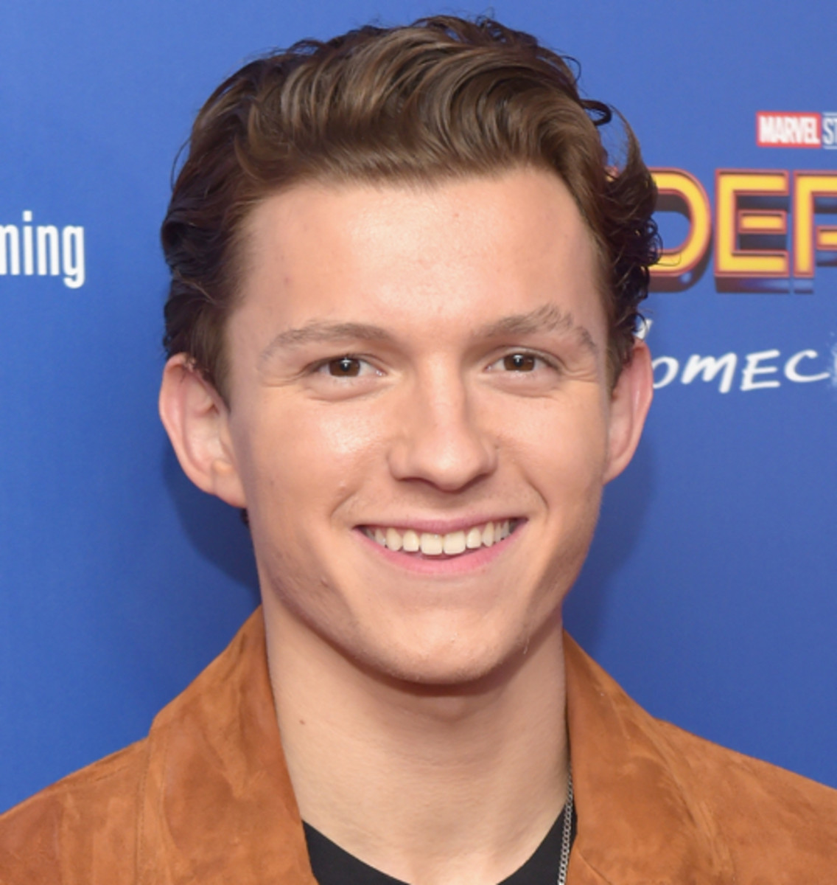
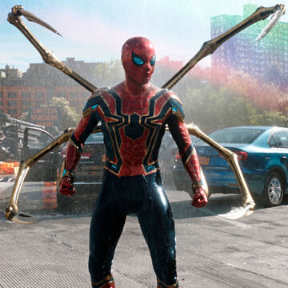
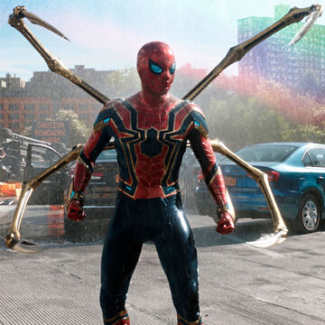
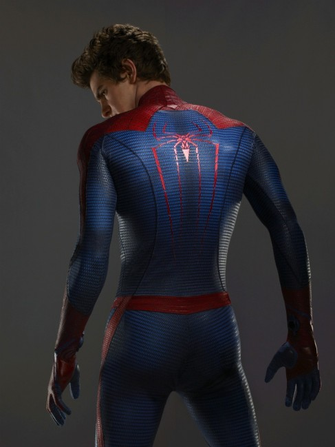
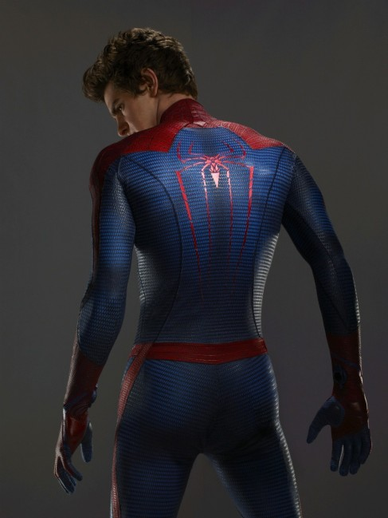

Friendly Neighborhood Spider-Man
Tom Holland

 

Thomas Stanley Holland was born on 1 June 1996 in the town of Kingston upon Thames, England and is a British actor. Known for playing Spiderman, the main character in the film adaptations of the Spiderman trilogy.
In June 2015, Holland signed a six-picture deal with Marvel Studios to play a teenage Peter Parker / Spider-Man. He auditioned against 1,500 teenagers worldwide. While producers Kevin Feige and Amy Pascal were impressed with his performances in The Impossible and In the Heart of the Sea, directors Russo brothers cited Holland's dancing and gymnastics background as the reasons to cast him.
The Amazing Spiderman
Andrew Garfield
 

Andrew Russell Garfield was born on 20 August 1983, in Los Angeles, California. His mother, Lynn (née Hillman), was from Essex, England, and his father, Richard Garfield, is from California. Garfield's paternal grandparents were also from the United Kingdom. Garfield's parents moved the family from Los Angeles to the UK when he was three years old, and he was brought up in Epsom, Surrey. Garfield had a secular upbringing.
Garfield was cast as Spider-Man/Peter Parker, opposite Emma Stone as his love interest Gwen Stacy, in Marc Webb's The Amazing Spider-Man (2012), a reboot of the Spider-Man film series. Garfield saw his casting as a "massive challenge in many ways", having to make the character "authentic" and "live and breathe in a new way". He described Peter as someone he could relate to and stated that the character had been an important influence on him since he was a child.
The Original Friendly Neighborhood Spider-Man
Tobey Maguire

Tobias Vincent Maguire was born on June 27, 1975, in Santa Monica, California, to Wendy Brown and Vincent Maguire.His parents separated when he was two years old, and Maguire spent much of his childhood living with various family members. During his childhood, Maguire entertained the idea of becoming a chef and wanted to enroll in a home economics class as a sixth grader. His mother offered him $100 to take a drama class instead, and he agreed.
In 2002, Maguire starred in Spider-Man, based on the popular Marvel Comics superhero. The film was a major success and made him into a star. He reprised the role in the sequels Spider-Man 2 (2004) and Spider-Man 3 (2007), and has also provided the voice of Spider-Man for the video game adaptations of the films. All three movies went on to be part of the highest-grossing movies each year.His performance as Spider-Man earned him some glowing reviews. Mark Caro of the Chicago Tribune wrote that "with his big, round, soulful eyes, Maguire always has been able to convey a sense of wonder, and his instinct for understatement also serves him well here." Due to script and production complications, a proposed fourth Spider-Man movie did not materialize. Sony's Columbia Pictures decided to reboot the franchise. The film, titled The Amazing Spider-Man, was released on July 3, 2012, with a different actor, Andrew Garfield, playing the lead.